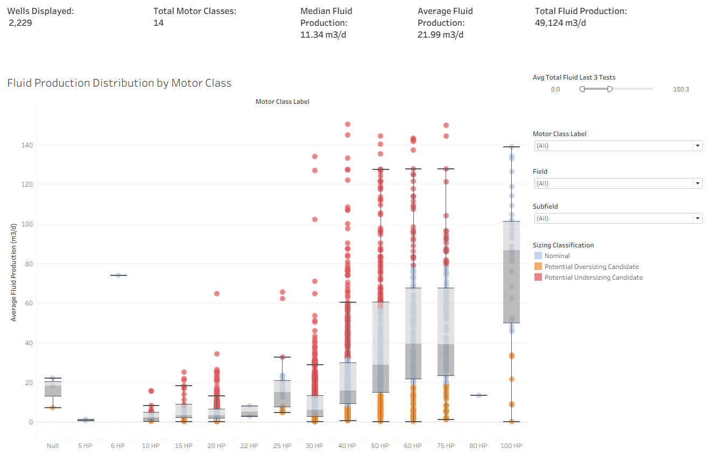
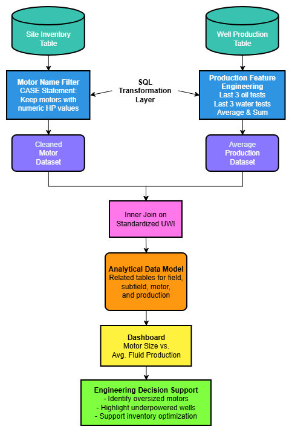
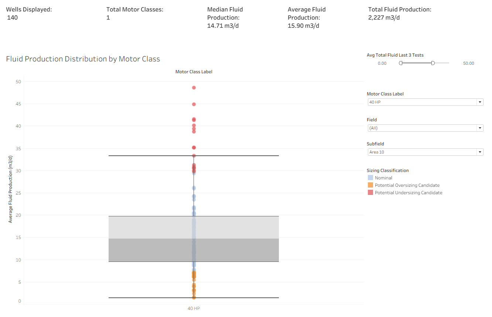
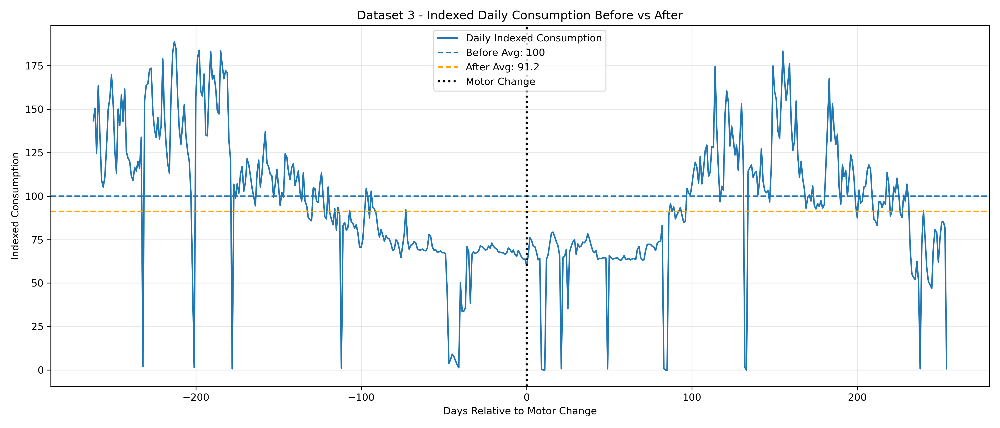
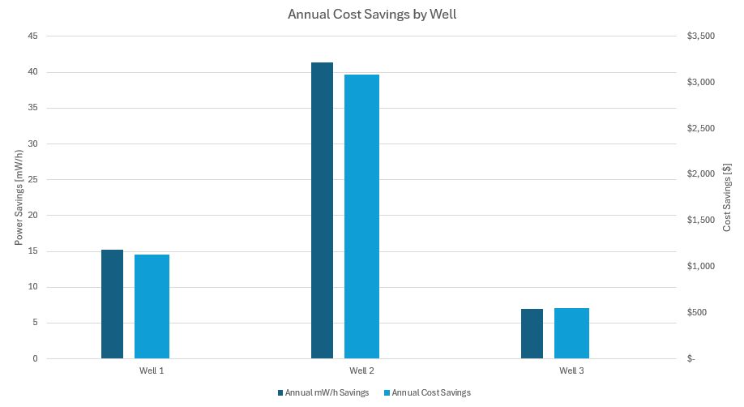
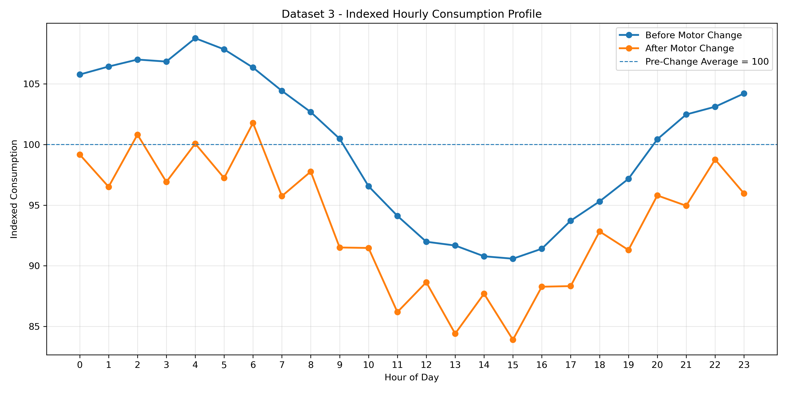

Engineering Analytics Project
Production-Based Motor Utilization Analytics
Developed a Tableau and SQL-based engineering analytics dashboard to evaluate fluid production distributions across installed motor classes in over 2,200 producing wells. The system integrated production test data and inventory records through custom SQL transformations and statistical classification logic to identify potential swap candidates.
The dashboard was designed as a screening-level engineering decision-support tool to assist in identifying potential optimization opportunities and operational review candidates.

Problem Statement
Motor allocation practices across producing wells were historically difficult to evaluate at scale due to inconsistent equipment configurations and fragmented production data sources. Engineers lacked a centralized method for visualizing production behavior relative to installed motor classes and identifying wells potentially operating outside typical utilization ranges.
Objective
Create a data-driven analytics platform capable of integrating production test and inventory data to visualize production distributions across motor classes and identify wells warranting further engineering review.
Methodology

1. Data Integration
Combined production test data with equipment inventory records to associate producing wells with installed motor class information.
2. SQL Transformation
Developed custom SQL logic to clean, join, and structure well-level production and equipment data for analysis.
3. Statistical Classification
Applied distribution-based classification logic to identify wells operating outside typical production ranges for their installed motor class.
4. Dashboard Development
Built a Tableau dashboard to visualize production distributions, compare motor classes, and support screening-level engineering review.
Dashboard Views

Key Findings
- Significant production overlap existed between motor classes, indicating production alone is insufficient for motor sizing.
- Larger motor classes exhibited substantially greater production variability and operational spread.
- Statistical review classifications identified wells exhibiting atypical utilization behaviour relative to comparable motor classes.
Engineering Limitations
Rod string loading, stroke speed and length, well depth and geometry, and downhole pump configuration all heavily influence motor power requirements. These variables were excluded from this analysis because the dashboard was intended as a screening tool to narrow the total number of wells requiring further engineering analysis.
Validation Case Study
Motor Downsizing Impact
Objective
To evaluate whether motor sizing optimization opportunities identified through production analytics could translate into measurable reductions in power consumption, three wells that underwent motor downsizing from 40 HP to 20 HP were analyzed.
Methodology
Three potential oversizing candidates were evaluated and had their 40 HP motors swapped with 20 HP motors in August 2025. To compare power consumption before and after the swaps, load profiles were created for each well. These included daily energy consumption throughout the year, an average hourly consumption profile, and a smoothed demand and consumption chart. Cost savings were estimated using an assumed electricity consumption rate for comparison purposes.
Results
| Well | Before (kWh/day) |
After (kWh/day) |
Savings (kWh/day) |
Savings (%) |
Annual Savings (kWh) |
Annual Cost Savings |
|---|---|---|---|---|---|---|
| A | 467.4 | 425.7 | 41.7 | 8.9% | 15,224 | $1,134 |
| B | 189.9 | 76.5 | 113.4 | 59.7% | 41,379 | $3,083 |
| C | 217.9 | 198.7 | 19.2 | 8.8% | 7,011 | $522 |
| Average | — | — | 58.1 | 25.8% | 21,205 | $1,580 |
Validation Visuals



Discussion
The observed results demonstrated that motor downsizing can significantly reduce electrical consumption when existing installations are oversized relative to operating requirements. Although savings varied between wells, all three motor replacements resulted in measurable reductions in energy consumption.
- Approximately 60% reduction in daily energy usage in the largest observed case.
- Approximately 41 MWh of annual energy savings in the largest observed case.
- Approximately $3,000 in annual operating cost reduction in the largest observed case.
These results support the use of production-based analytics as a screening tool for identifying motor optimization opportunities.
Recommendations
- Wells identified as potential oversized candidates should undergo detailed mechanical review.
- Further review should include rod loading, stroke-speed analysis, and downhole equipment evaluation.
- Future optimization work could incorporate downhole loading models to improve sizing recommendations.
Technical Stack
| Tool | Purpose |
|---|---|
| SQL | Data extraction and transformation |
| Tableau | Statistical visualization and dashboarding |
| Statistical Analysis | Distribution and anomaly identification |
| Engineering Analytics | Utilization classification logic |
Data Disclaimer
Operational data shown in this project has been hidden, anonymized, or modified for portfolio presentation purposes. Engineering relationships, implementation approach, and technical methodology were preserved while removing proprietary operational details.